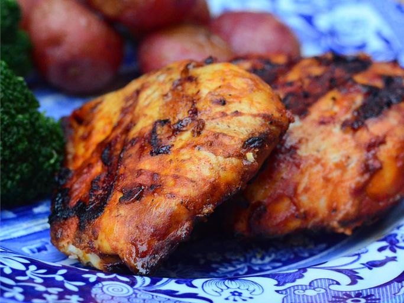

Good Frickin' Paprika Chicken

Description
While this is a pretty straightforward grilled chicken recipe, the vinaigrette at the end was a last minute touch that worked out nicely. I really like oil and vinegar-based sauces on grilled meats. They work beautifully with the smoky, caramelized exterior.
Ingredients
- 6 tablespoons plain yogurt
- 3 cloves garlic, crushed
- 3 tablespoons ground paprika
- 2 tablespoons olive oil
- 1 tablespoons hot chile paste
- 1 pinch cayenne pepper
- 1 whole chicken, cut into 8 pieces
- salt
- 1/4 cup olive oil
- 2 tablespoons sherry vinegar
- 1 tablespoon ketchup
- 1/8 teaspoon hot chile paste
- 1 pinch paprika
- salt and pepper to taste
Steps
- Step 1: Whisk together yogurt, garlic, 3 tablespoons paprika, 2 tablespoons olive oil, 1 tablespoon hot chile paste, and cayenne pepper in a large bowl.
- Step 2: Mix in chicken pieces and toss to evenly coat. Cover the bowl with plastic wrap and marinate in the refrigerator for 3 hours.
- Step 3: Preheat an outdoor grill for medium-high heat, and lightly oil the grate.
- Step 4: Remove chicken from the bag and transfer to a plate or baking sheet lined with paper towels. Pat chicken pieces dry with more paper towels. Season with salt.
- Step 5: Combine 1/4 cup olive oil, sherry vinegar, ketchup, 1/8 teaspoon hot chile paste, pinch paprika, salt, and pepper in a small bowl. Set aside.
- Step 6: Grill chicken, skin-side down, on the preheated grill for 4 minutes with grill lid closed.
- Step 7: Turn chicken and grill with lid closed until well-browned and meat is no longer pink in the center, about 6 minutes. An instant-read thermometer inserted into the thickest part of the thigh should read 180 degrees F (82 degrees C).
- Step 8: Spoon sherry vinegar mixture over cooked chicken and serve.